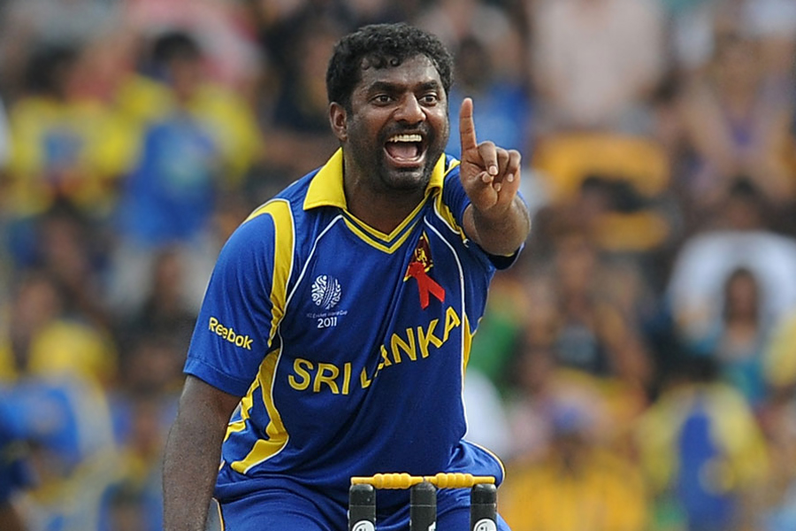
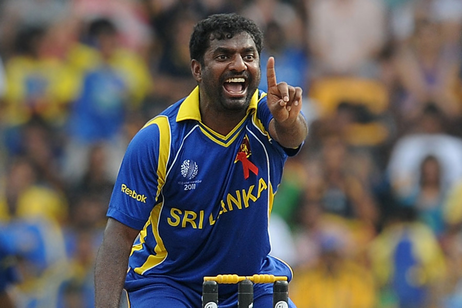
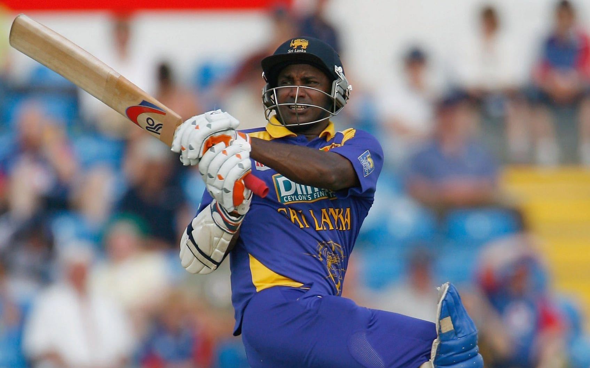
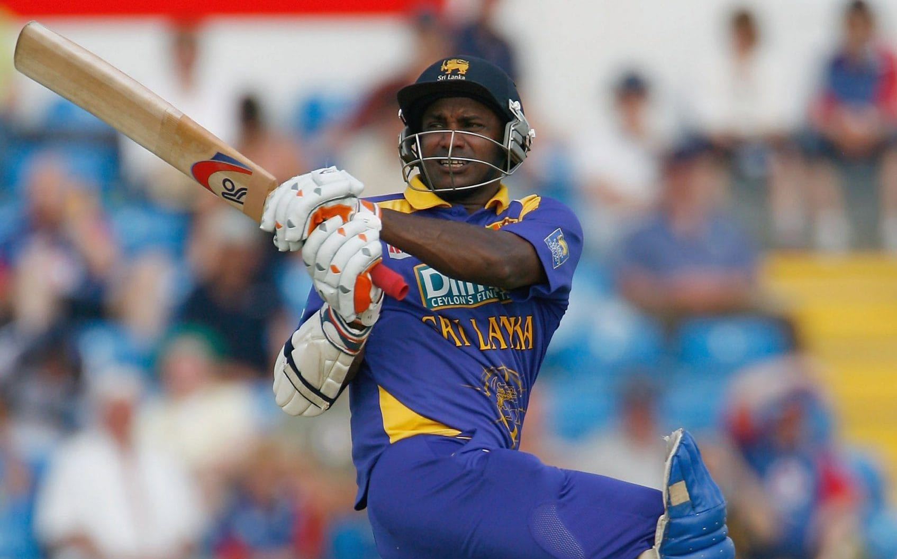

Welcome To The Gallery
Golden Era Of Sri lankan Cricket
Angelo Davis Mathews, is a professional Sri Lankan cricketer and a former captain in all formats.
He was also a key member of the team that won the 2014 ICC World Twenty20 and was part of the team that made the finals of 2011 Cricket World Cup,
2009 ICC World Twenty20 and 2012 ICC World Twenty20. An occasional bowler who can deliver swinging match-winning spells,
Mathews and Lasith Malinga holds the record for the highest ninth wicket partnership in ODI cricket.
![<h3>Tillakaratne Dilshan</h3><p>Tillakaratne Dilshan is a former Sri Lankan cricketer and former captain of the Sri Lanka national cricket team.<br> As the best rated Sri Lankan player in run-chases in ODI history,he is often regarded as one of the most innovative ODI batsmen of all time.<br> Dilshan is considered to be a rare example of a cricketer with notable skills in all aspects of the game, who can bat, bowl, field and keep wicket.<br> He is an aggressive right-hand batsman who invented the scoop, which has come to be known as the Dilscoop, a shot that hits the ball over the keeper.<br> Apart from being an opening batsman, he is also a capable off-break bowler. Energetic in the field, he usually fields at the point region.</p>](../photos/gallery/dilshan (2).jpg)
.jpg)
![<h3>Lasith Malinga</h3><p>Lasith Malinga is a Sri Lankan former cricketer who is widely regarded as one of the greatest limited overs bowlers of all time. <br>Malinga captained the Sri Lankan 2014 T20 World Cup winning side and he is the highest wicket taker in IPL and is the only bowler to take 4 wickets in 4 balls twice in international cricket. <br>Malinga is a right-arm fast bowler that is commonly used as a specialist death bowler, and is well known for his distinctive round-arm action, sometimes referred to as a sling action, <br>hence his aforementioned nickname. Malinga announced his retirement from all forms of cricket on 14 September 2021.</p>](../photos/gallery/malinga (2).jpg) Muttiah Muralitharan
Muttiah MuralitharanMuttiah Muralitharan is a Sri Lankan cricket coach, former professional cricketer, businessman and a member of the ICC Cricket Hall of Fame.
Averaging over 6 wickets per test match, Murali is widely regarded as the greatest and the most successful bowler to ever play international cricket.
He is the only bowler to take 800 Test wickets and 530+ ODI wickets. As of March 2022, he has taken more wickets in international cricket than any other bowler.
 Sanath Jayasuriya
Sanath JayasuriyaSanath Teran Jayasuriya, is a former Sri Lankan cricketer and a captain. He is credited for having revolutionized one-day international cricket
with his explosive batting with Romesh Kaluwitharana in the mid 1990s, which initiated the hard-hitting modern-day batting strategy of all nations.
Kumar Chokshanada Sangakkara is a Sri Lankan cricket commentator, former professional cricketer, businessman, ICC Hall of Fame inductee,
and the former president of Marylebone Cricket Club. He is widely regarded as one of the greatest batsmen in the history of the sport.
He was officially rated in the top three current batsmen in the world in all three formats of the game at various stages of his international career.
Sangakkara scored 28,016 runs in international cricket across all formats in a career that spanned 15 years.
At retirement, he was the second-highest run-scorer in ODI cricket,next only to Sachin Tendulkar, and the sixth-highest run scorer in Test cricket.
.jpg)